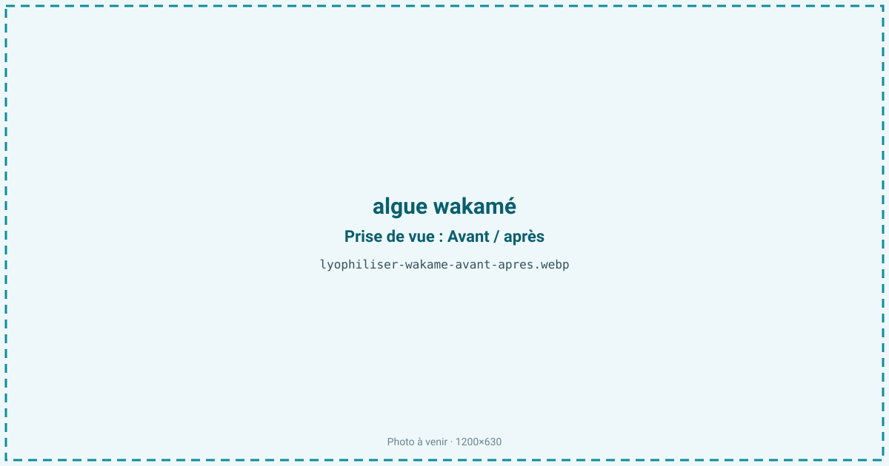
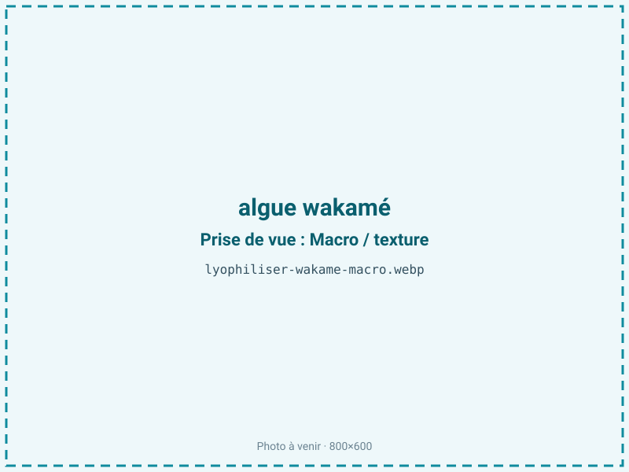
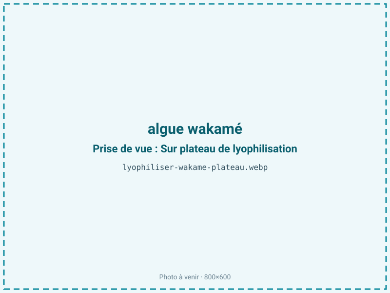
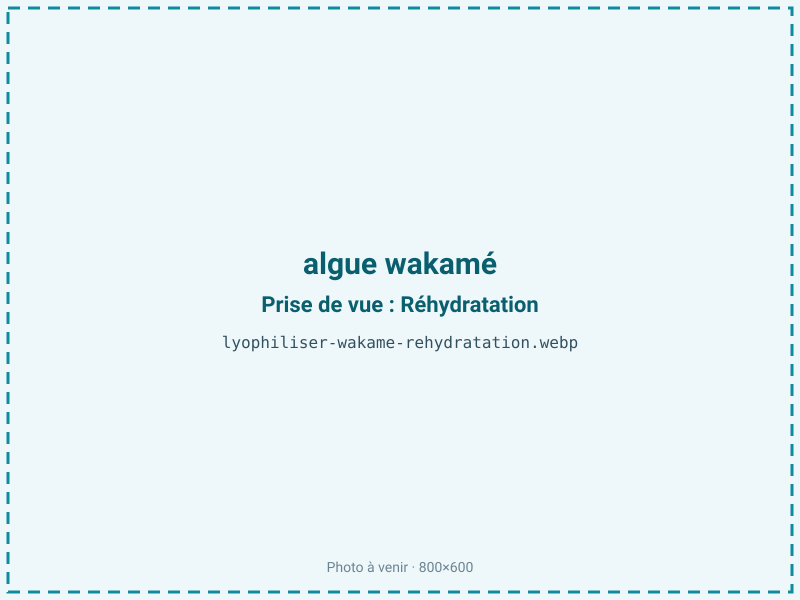

Lyophiliser de l'algue wakamé
Le wakamé frais ou salé est encombrant et exige une réhydratation. Lyophilisé, il conserve sa couleur verte vive et ses minéraux marins, et se réhydrate instantanément dans une soupe ou une salade. Léger et stable jusqu'à deux ans, c'est une algue prête à l'emploi riche en iode.

En bref
Comment algue wakamé se comporte à la lyophilisation
Le wakamé est une algue brune dont la couleur ne devient verte qu'au blanchiment : une chaleur brève dégrade la fucoxanthine brune et révèle la chlorophylle verte sous-jacente, teinte que le froid fige ensuite durablement. Sa paroi est riche en alginates et en mannitol, polysaccharides très hydrophiles qui retiennent l'eau — l'algue fraîche titre près de 88 % d'eau. À la congélation, cette matrice gélifiée forme des cristaux fins si le refroidissement est rapide ; à la sublimation, la fine épaisseur de la fronde sèche vite, d'où un cycle court de 18 à 26 h comparé aux chairs animales. Le wakamé concentre une teneur en minéraux élevée pour un aliment — iode, calcium, magnésium — qui traverse le froid sans altération. Le point sensible est le sel : commercialisé le plus souvent salé pour sa conservation, il doit être dessalé avant traitement, faute de quoi le sel résiduel abaisse le point de congélation, ralentit le séchage et rend le produit hygroscopique.
Paramètres de cycle
Dessaler soigneusement le wakamé salé par rinçages successifs avant tout traitement : le sel résiduel abaisse le point de congélation et attire l'humidité sur le produit fini. Si l'algue est crue, un blanchiment bref fixe la couleur verte avant congélation. Congeler rapidement à −30 °C. La fronde étant fine, l'étaler à plat en évitant les paquets qui sécheraient de façon inégale. Clayette de 20 à 30 °C possible en primaire, le cycle restant court. La cible d'aw est basse, 0,20 à 0,30 : produit maigre et sans lipides à protéger, le wakamé gagne à être séché à fond, une aw basse maximisant la stabilité et bloquant tout développement microbien résiduel. Le critère d'arrêt est une fronde cassante qui s'émiette, avec contrôle d'aw.
Pièges connus
- Bien rincer le sel avant traitement.
- Produit maigre : viser une aw basse pour une longue conservation.



Variantes & provenance
L'espèce et la partie de l'algue changent le résultat : la fronde (feuille) se réhydrate en lamelles souples, tandis que la nervure centrale et la partie sporophylle (mekabu), plus épaisses et fermes, demandent un cycle plus long. Le wakamé sauvage et le wakamé de culture diffèrent en épaisseur et en teneur en minéraux. La provenance (Bretagne, Galice, Asie) influe sur le profil iodé et la texture. Le format d'achat est déterminant : le wakamé salé exige un dessalage complet, le wakamé déjà séché n'a pas d'intérêt à lyophiliser ; seul le frais ou le salé réhydraté justifie le procédé. La découpe, en lanières ou en brisures, fixe la présentation finale.
Conservation & DLUO
Le facteur limitant est la reprise d'humidité : les alginates et le mannitol du wakamé sont fortement hygroscopiques, et le moindre sel résiduel aggrave cette avidité pour l'eau. Sans lipides à protéger, l'algue n'est pas sujette au rancissement, si bien qu'une aw basse (0,20-0,30) lui est franchement favorable et n'entraîne aucune contrepartie oxydative. La couleur verte, elle, craint la lumière prolongée. Comptez 12 à 24 mois en sachet barrière, la longue conservation étant l'un des atouts de l'algue lyophilisée par rapport aux chairs marines. Un absorbeur d'humidité est plus pertinent qu'un absorbeur d'oxygène. Stockage à température ambiante, à l'abri de la lumière et de l'humidité ; refermer aussitôt après ouverture, car l'algue capte l'eau de l'air en quelques minutes.
12 à 24 mois en sachet.
Estimez selon votre emballage :
Face aux autres procédés de séchage
Le wakamé est traditionnellement vendu séché à chaud ou salé, deux formats qui exigent un trempage de plusieurs minutes et laissent une algue plus brune et plus ferme. Le séchage à l'air chaud ternit la couleur et rend la fronde cassante sans porosité. Le micro-ondes sous vide sèche vite et convient à une poudre d'algue, mais n'apporte pas l'atout majeur de la lyophilisation : une réhydratation quasi instantanée, en quelques dizaines de secondes, avec une couleur verte vive préservée. Pour une algue prête à jeter dans une soupe miso ou une salade sans trempage, le froid fait la différence.
Marchés & applications
Le wakamé lyophilisé alimente les soupes instantanées (miso, nouilles), les salades d'algues prêtes à réhydrater et les mélanges de condiments japonais type furikake. En poudre, il sert de source d'iode et d'exhausteur marin dans l'assaisonnement et les compléments. Les acheteurs types sont les fabricants de plats et soupes instantanés, les marques d'épicerie japonaise et bio, et le secteur des compléments alimentaires riches en iode. Les algoculteurs bretons y voient un moyen de valoriser une production locale sous une forme légère et stable.
- Salades et soupes instantanées
- Poudre d'algue riche en iode
Questions fréquentes — algue wakamé
Pourquoi le wakamé est-il vert alors que c'est une algue brune ?
Parce que le blanchiment détruit la fucoxanthine brune et révèle la chlorophylle verte sous-jacente. Le froid fige ensuite cette couleur.
Faut-il dessaler le wakamé avant ?
Oui, impérativement s'il est salé : le sel résiduel ralentit le séchage et rend le produit fini hygroscopique.
Se réhydrate-t-il vite ?
Très vite, en quelques dizaines de secondes dans un liquide chaud ou froid, plus rapidement que le wakamé séché du commerce.
Combien de temps se conserve-t-il ?
12 à 24 mois en sachet barrière, à condition de le tenir à l'abri de l'humidité, qu'il capte en quelques minutes une fois ouvert.
Conserve-t-il ses minéraux et son iode ?
Oui, le froid n'altère pas la fraction minérale. Le wakamé reste une source concentrée d'iode et de calcium.
Peut-on lyophiliser le mekabu ?
Oui, mais cette partie plus épaisse et ferme demande un cycle plus long que la fronde.
Quel est le rendement ?
Environ 8:1 sur algue fraîche égouttée, l'algue étant très riche en eau. Le rendement chute encore si l'on part d'algue salée mal essorée.
Prochaine étape : envoyez-nous 200 g
Vous avez les repères du wakamé. La suite logique : nous envoyer un échantillon et repartir avec une fiche technique sur votre produit — rendement, aw finale, coût au kilo.
Tester du wakamé — 250 à 500 €Déductible de votre premier lot.